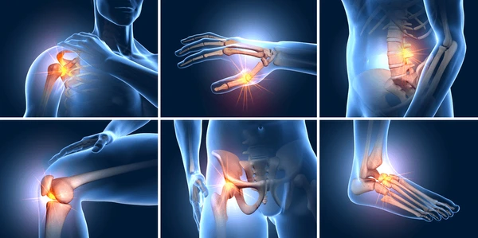
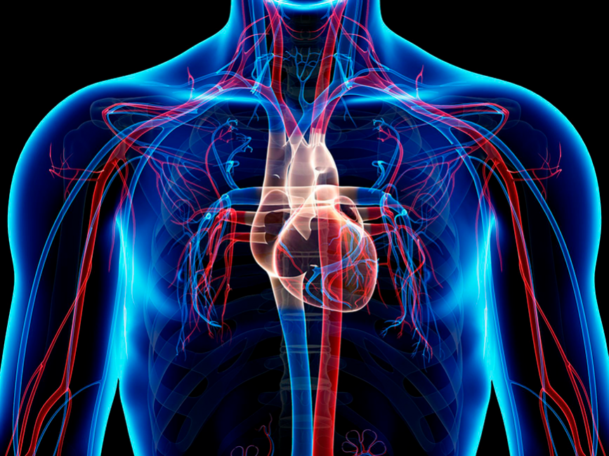

HGH
Hormona de crecimiento reconstructivo anti-vejez
Que beneficios tiene?
La hormona del crecimiento humano (HGH por sus siglas en inglés) tiene varios beneficios potenciales para la salud y el bienestar.
Aquí hay una lista de algunos de ellos:
1. **Estimula el crecimiento muscular:**
La HGH puede aumentar la síntesis de proteínas y promover el crecimiento muscular magro. ya que con la edad nuestro cuerpo no absorbe los mismos nutrientes y no podemos absorber la proteina en su totalidad como antes.

2. **Promueve la pérdida de grasa:**
La HGH puede aumentar la lipólisis, lo que significa que ayuda a descomponer las grasas almacenadas y usarlas como fuente de energía.
3. **Mejora la densidad ósea:**
La HGH puede aumentar la densidad mineral ósea y mejorar la salud ósea en general, para evitar posibles fracturas o desgastes.

4. **Ayuda a la regeneración celular:**
La HGH puede estimular la regeneración celular y ayudar en la reparación de tejidos, lo que puede ser beneficioso para la recuperación después de lesiones.

5. **Mejora la calidad del sueño:**
La HGH se produce principalmente durante el sueño profundo, y puede contribuir a un sueño de mejor calidad.
6. **Fortalece el sistema inmunológico:**
La HGH puede aumentar la producción de células inmunes en el cuerpo, lo que puede fortalecer el sistema inmunológico y ayudar a combatir enfermedades.

7. **Mejora la función cognitiva:**
Algunas investigaciones sugieren que la HGH puede tener efectos positivos en la función cognitiva, incluida la memoria y la concentración.
8. **Promueve la salud cardiovascular:**
La HGH puede ayudar a mejorar la salud del corazón y los vasos sanguíneos al reducir los niveles de colesterol LDL (malo) y aumentar los niveles de colesterol HDL (bueno).


9. **Aumenta la resistencia y la capacidad de ejercicio:**
La HGH puede mejorar la capacidad de ejercicio al aumentar la resistencia y la fuerza muscular.

10. **Reduce los signos de envejecimiento:**
Algunos defensores de la HGH sugieren que puede reducir los signos de envejecimiento, como arrugas y pérdida de elasticidad de la piel.